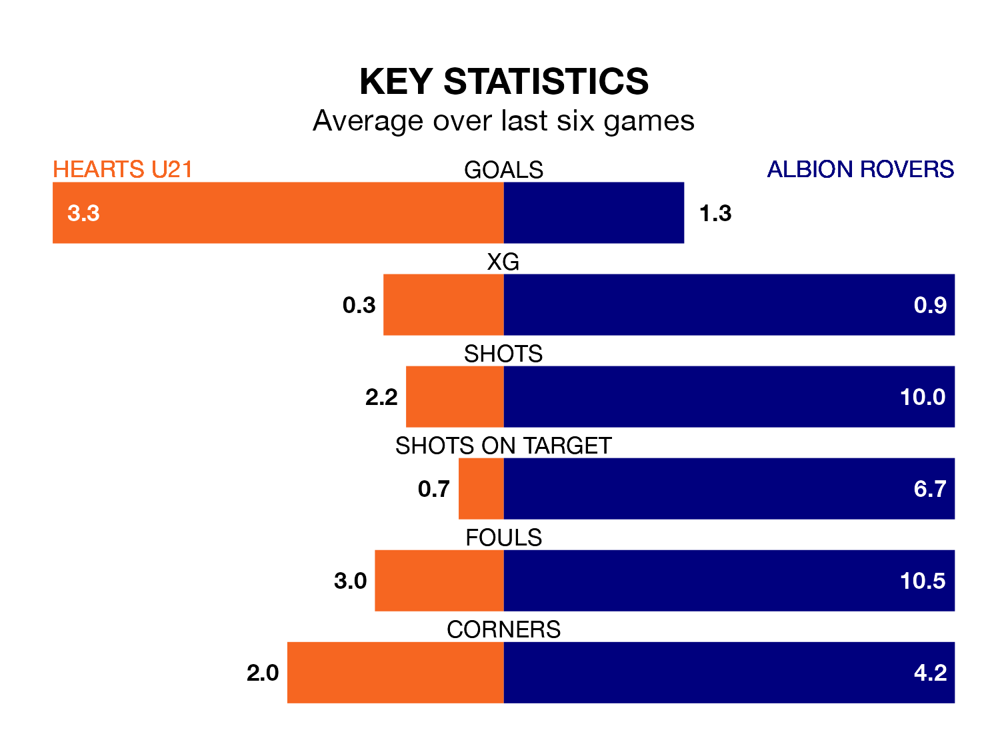

Hearts U21 face a challenge to maintain their high-scoring form at home against a tight Albion Rovers defence on Friday.
With 74 goals in 27 games, Hearts U21 are the second-highest scorers in the Lowland Football League ahead of the 7.45pm kick-off at the Ainslie Park Stadium.
They face a Wee Rovers side who have scored 36 in 25 matches, but conceded only 21 goals, putting them top of the league's tightest defences.
Hearts U21 are fifth in the table after 27 games, of which they have won 15 and drawn six, earning 51 points.
Albion are three places behind Hearts in eighth, with 12 wins and seven draws putting them on 43 points.
The home team are in mixed form in the Lowland Football League, with three wins and three losses from their last six games.
With four wins and two draws over that period, Rovers' form is better – they have taken 14 points from 18, compared to Hearts U21's nine.
Hearts U21's last match was on February 23, a 4-2 win against East Kilbride.
Albion beat Linlithgow Rose 1-0 last time out, on Saturday.
Updated: 09:34 (UTC), 08/03/24